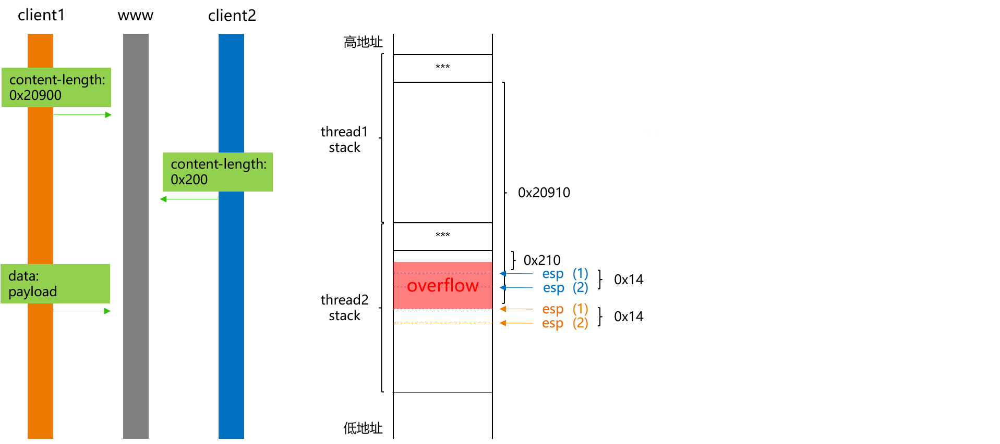

前言
Chimay-Red是针对MikroTik RouterOs中www程序存在的一个漏洞的利用工具，该工具在泄露的Vault 7文件中提及。利用该工具，在无需认证的前提下可在受影响的设备上实现远程代码执行，从而获取设备的控制权。该漏洞本质上是一个整数溢出漏洞，对漏洞的利用则通过堆叠远程多线程栈空间的思路完成。更多信息可参考博客Chimay-Red。
下面结合已有的漏洞利用脚本Chimay-Red，对该漏洞的形成原因及利用思路进行分析。
环境准备
MikroTik官方提供了多种格式的镜像，可以利用.iso和.vmdk格式的镜像，结合VMware虚拟机来搭建仿真环境。具体的步骤可参考文章 Make It Rain with MikroTik 和 Finding and exploiting CVE-2018–7445，这里不再赘述。
根据MikroTik官方的公告，该漏洞在6.38.5及之后的版本中进行了修复，这里选取以下镜像版本进行分析。
6.38.4，x86架构，用于进行漏洞分析6.38.5，x86架构，用于进行补丁分析
搭建起仿真环境后，还需要想办法获取设备的root shell，便于后续的分析与调试。参考议题《Bug Hunting in RouterOS》，获取root shell的方法如下：
- 通过挂载
vmdk并对其进行修改：在/rw/pckg目录下新建一个指向/的符号链接(ln -s / .hidden) - 重启虚拟机后，以
ftp方式登录设备，切换到/路径(cd .hidden)，在/flash/nova/etc路径下新建一个devel-login目录 - 以
telnet方式登录设备(devel/<admin账户的密码>)，即可获取设备的root shell
漏洞定位
借助bindiff工具对两个版本中的www程序进行比对，匹配结果中相似度较低的函数如下。
逐个对存在差异的函数进行分析，结合已知的漏洞信息，确定漏洞存在于Request::readPostDate()函数中，函数控制流图对比如下。
6.38.4版本中Request::readPostDate()函数的部分伪代码如下，其主要逻辑是：获取请求头中content-length的值，根据该值分配对应的栈空间，然后再从请求体中读取对应长度的内容到分配的缓冲区中。由于content-length的值外部可控，且缺乏有效的校验，显然会存在问题。
1 | char Request::readPostData(Request *this, string *a2, unsigned int a3) |
漏洞分析
通过对www程序进行分析，针对每个新的连接，其会生成一个新线程来进行处理，而每个线程的栈空间大小为0x20000。
1 | // main() |
www进程拥有自己的栈，创建的线程也会拥有自己的栈和寄存器，而heap、code等部分则是共享的。那各个线程的栈空间是从哪里分配的呢? 简单地讲，进程在创建线程时，线程的栈空间是通过mmap(MAP_ANONYMOUS|MAP_STACK)来分配的。同时，多个线程的栈空间在内存空间中是相邻的。
Stack space for a new thread is created by the parent thread with
mmap(MAP_ANONYMOUS|MAP_STACK). So they’re in the “memory map segment”, as your diagram labels it. It can end up anywhere that a largemalloc()could go. (glibcmalloc(3)usesmmap(MAP_ANONYMOUS)for large allocations.) (来源)
结合上述知识，当content-length的值过小(为负数)或过大时，都会存在问题，下面分别对这2种情形进行分析。
content-length的值过小(为负数)
以content-length=-1为例，设置相应的断点后，构造数据包并发送。命中断点后查看对应的栈空间，可以看到，进程栈空间的起始范围为0x7fc20000~0x7fc41000，而当前线程栈空间的起始范围为0x774ea000~0x77509000，夹杂在映射的lib库中间。
1 | pwndbg> i threads |
对应断点处的代码如下，其中alloca()变成了对应的内联汇编代码。
1 | pwndbg> x/12i $eip |
由于content-length=-1，调用alloca()后栈空间未进行调整，之后在调用istream::read()时，由于传入的size参数为-1(即0xffffffff)，继续执行时会报错。
1 | pwndbg> c |
在崩溃点0x77569e90处，edi的值为0x77509000，由于其指向的地址空间不可写，故出现Segmentation fault。
1 | 0x774ea000 0x77509000 rw-p 1f000 0 <=== 当前线程的栈空间 |
注意到在调用istream::read()时，传入的第一个参数为当前的栈指针esp(其指向的空间用于保存读取的内容)，在读取的过程中会覆盖栈上的内容，当然也包括返回地址(如执行完Request::readPostData()后的返回地址)。
1 | pwndbg> x/wx $esp |
因此，有没有可能在这个过程中进行利用呢? 如果想要进行利用，大概需要满足如下条件。
content-length的值在0x7ffffff0~0xffffffff范围内 (使线程的栈空间向高地址方向增长)- 在调用
istream::read()时，在读取请求体中的部分数据后，能使其提前返回
由于\x00不会影响istream::read()，而只有当读到文件末尾时才会提前结束，否则会一直读取直到读取完指定大小的数据。在测试时发现，无法满足上述条件，因此在这个过程中没法利用。
Chimay-Red中通过关闭套接字的方式使istream::read()提前返回，但并没有读取请求体中的数据。如果有其他的方式，欢迎交流:)
content-length的值过大
根据前面可知，当content-length的值过大时(>0x20000)，在Request::readPostData()中，会对线程的栈空间进行调整，使得当前线程栈指针esp“溢出”(即指向与当前线程栈空间相邻的低地址区域)。同样在执行后续指令时，由于esp指向的某些地址空间不可写，也会出现Segmentation fault。
1 | pwndbg> vmmap |
在这个过程中是否可以进行利用呢? 通过向低地址方向调整当前线程的esp指针，比如使其溢出到0x774e6000 ~0x774e7000，然后再修改某些地址处的内容，但还是无法使得istream::read()在读取部分内容后提前返回，同样会出现类似的错误。
漏洞利用
Chimay-Red中通过堆叠两个线程栈空间的方式完成了漏洞利用。前面提到，针对每个新的连接，都会创建一个新的线程进行处理，而新创建的线程会拥有自己的栈空间，其大小为0x20000。同时，多个线程的栈空间在地址上是相邻的，起始地址间隔为0x20000。如果能够使某个线程的栈指针esp“下溢”到其他线程的栈空间内，由于栈空间内会包含返回地址等，便可以通过构造payload覆盖对应的返回地址，从而实现劫持程序控制流的目的。下面对该思路进行具体分析。
首先，与服务www建立两个连接，创建的两个线程的栈空间初始状态如下。
然后，client1发送HTTP请求头，其中content-length的值为0x20900。在对应的thread1中，先对当前栈指针esp进行调整，然后调用istream::read()读取请求体数据，对应的栈空间状态如下。由于此时还未发送HTTP请求体，因此thread1在某处等待。
同样，client2发送HTTP请求头，其中content-length的值为0x200。类似地，在对应的thread2中，先对当前栈指针esp进行调整，然后调用istream::read()读取请求体数据，对应的栈空间状态如下。由于此时还未发送HTTP请求体，thread2也在某处等待。
之后，client1发送HTTP请求体，在thread1中读取发送的数据，并将其保存在thread1的esp(1)指向的内存空间中。当发送的数据长度足够长时，保存的内容将覆盖thread2栈上的内容，包括函数指针、返回地址等。例如当长度为0x20910-0x210-0x14时，将覆盖函数istream::read()执行完后的返回地址。实际上，当thread2执行istream::read()时，对应的栈指针esp(2)将继续下调，以便为函数开辟栈帧。同时由于函数isteam::read()内会调用其他函数，因此也会有其他的返回地址保存在栈上。经过测试，client1发送的HTTP请求体数据长度超过0x54c时，就可以覆盖thread2栈上的某个返回地址。
在这个例子中，
0x54c是通过cyclic pattern方式确定的。
此时，thread2仍然在等待client2的数据，client2通过关闭连接，即可使对应的函数返回。由于对应的返回地址已被覆盖，从而达到劫持控制流的目的。
参考Chimay-Red工具中的StackClashPOC.py，对应上述流程的代码如下。
1 | # 可参考StackClashPOC.py中详细的注释 |
需要说明的是，Chimay-Red工具中的流程与上述流程存在细微的区别，其实质在于thread1保存请求体数据的操作与thread2为执行isteam::read()函数开辟栈空间的操作的先后顺序。
在能够劫持控制流后，后续的利用就比较简单了，常用的思路如下。
注入
shellcode，然后跳转到shellcode执行调用
system()执行shell命令当前程序存在
system()，直接调用即可当前程序不存在
system()：寻找合适的gadgets，通过修改got的方式实现Chimay-Red工具: 由于www程序中存在dlsym()，可通过调用dlsym(0,"system")的方式查找system()
补丁分析
在6.38.5版本中对该漏洞进行了修复，对应的Request::readPostDate()函数的部分伪代码如下。其中，1) 在调用该函数时，传入的a3参数为0x20000，因此会对content-length的大小进行限制；2) 读取的数据保存在string类型中，即将数据保存在堆上。
1 | char Request::readPostData(Request *this, string *a2, unsigned int a3) |
小结
- 漏洞形成的原因为：在获取
HTTP请求头中content-length值后，未对其进行有效校验，造成后续存在整数溢出问题； Chimay-Red工具中通过堆叠两个线程栈空间的方式完成漏洞利用。
相关链接
- Chimay-Red
- Chimay-Red: Working POC of Mikrotik exploit from Vault 7 CIA Leaks
- Chimay-Red: RouterOS Integer Overflow Analysis
本文首发于安全客，文章链接：https://www.anquanke.com/post/id/200087